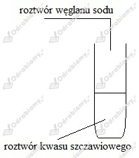

a)
b)
c)
d)
a)
nazwa systematyczna: kwas etanowy
nazwa zwyczajowa: kwas octowy
b)
nazwa systematyczna: kwas propanowy
nazwa zwyczajowa: kwas propionowy
c)
nazwa systematyczna: kwas pentanowy
nazwa zwyczajowa: kwas walerianowy
d)
nazwa systematyczna: kwas heksanowy
nazwa zwyczajowa: kwas kapronowy
1.
2.
Dokładny przebieg reakcji:
-
-
Zapis uproszczony:
UWAGA!! Treść zadania zawiera znaczące błędy, uniemożliwiające poprawne rozwiązanie w oparciu o przedstawione w podręczniku dane.
Roztwór wodny kwasu octowego wykazuje odczyn kwasowy, zatem barwy wskaźników będą następujące:
Zaczynamy od przekształcenia wzoru na stężenie procentowe, tak aby otrzymać wzór pozwalający obliczyć stężenie wynikające z mieszania roztworów:
W miejsce mas substancji w liczniku wstawiamy wyliczone wcześniej wyrażenie na masę substancji i otrzymujemy:
Wiemy, że otrzymany ocet będzie miał masę 1,5 kg. Możemy to zapisać jako:
Wodę traktujemy jako roztwór o stężeniu 0%. Podstawiamy znane wartości do wyznaczonego wcześniej równania. Jako roztwór 1 uznajemy esencję octową zaś jako roztwór 2 wodę.
Odpowiedź: Należy użyć 0,13 kg esencji octowej i 1,37 kg wody.
Zaczynamy od zapisania równania reakcji dysocjacji jonowej tej soli:
Ponieważ jest to sól mocnej zasady i słabego kwasu, zachodzić będzie hydroliza anionowa:
Odczyn wodnego roztworu tej soli będzie zasadowy.
Schemat doświadczenia:

Obserwacje:
Po dodaniu roztworu węglanu sodu do roztworu kwasu szczawiowego z probówki zaczyna wydzielać się gaz.
Wnioski:
Wydzielającym się gazem jest tlenek węgla(IV) będący produktem rozkładu kwasu węglowego. Powstanie kwasu węglowego świadczy o tym, iż został on "wyparty" z soli przez kwas szczawiowy. Kwas szczawiowy jest mocniejszym kwasem niż kwas węglowy. Zaszła reakcja: